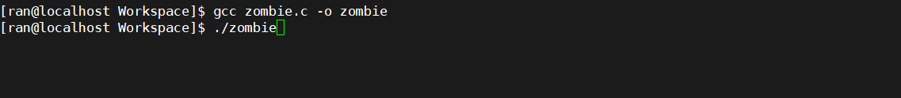
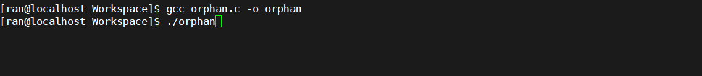

僵尸进程
linux中，正常情况下，子进程和父进程是一个异步过程，父进程永远无法预测子进程 到底什么时候结束。 当一个进程完成它的工作终止之后，它的父进程需要调用wait系列系统调用取得子进程的终止状态。如果子进程退出，而父进程并没有调用wait获取子进程的状态信息，那么子进程的task_struct结构及少数资源仍然保存在系统中，这个子进程称为僵死进程。之所以保留task_struct，是因为task_struct里面保存了进程的pid、退出码、以及一些统计信息，父进程很可能会关心这些信息。比如$?变量就保存了最近一个退出的前台进程的退出码，这个退出码就来自于僵尸进程的task_struct结构
观察一个僵尸进程
1 | /* zombie.c */ |

打开两个终端一个终端运行程序，另一个终端执行命令while :; do clear; ps -aux |grep zombie; sleep 0.5; done
运行后可以看到3秒内子进程和父进程均进入S睡眠状态，三秒后子进程执行exit，这时子进程状态变为Z，再过7秒后，两个进程都退出
僵尸进程的危害
进程退出的时候，内核释放该进程所有的资源，包括打开的文件，占用的内存等。但是仍然为其保留一定的信息（pid、退出状态、运行时间等）直到父进程wait时才释放。如果父进程不调用wait的话，那么保留的那段信息就不会释放，其进程号就会一直被占用，但是系统所能使用的进程号是有限的（ulimit -a查看）可能导致系统不能创建新的进程
孤儿进程
正如上文所说，子进程和父进程是一个异步过程，如果父进程退出，子进程还在运行，那么那些子进程将成为孤儿进程。孤儿进程将被init进程（1号）所收养，并由init进程对它们完成状态收集工作。这样的子进程叫孤儿进程。每当有一个孤儿进程，内核就把其父进程设置为init，init进程会循环等待它的已经退出的子进程
观察一个孤儿进程
1 | /* orphan.c */ |

打开两个终端一个终端运行程序，另一个终端执行命令while :; do clear; ps aux |grep orphan; sleep 0.5; done
运行后可以看到3秒内子进程和父进程均正常，三秒后父进程执行exit，这时子进程的ppid变为1，再过7秒后，这个进程退出
总结
事实上，任何一个子进程(init除外)在exit()之后，并非马上就消失掉，而是留下一个僵尸进程的数据结构，等待父进程处理。这是每个子进程在结束时都要经过的阶段。如果子进程在exit()之后，父进程没有来得及处理，这时用ps命令就能看到子进程的状态是Z。如果父进程能及时处理，可能用ps命令就来不及看到子进程的僵尸状态，但这并不等于子进程不经过僵尸状态。如果父进程在子进程结束之前退出，则子进程将由init接管。init将会以父进程的身份对僵尸状态的子进程进行处理，所以这么说来孤儿进程并不会有什么危害
如何解决/避免僵尸进程
解决方法：
杀死父进程，僵尸进程会变成僵尸孤儿进程，1号进程会扫描其子进程，把Z状态进程回收。
直接发信号（-9等信号）去处理僵尸进程是无效的，因为僵尸进程已经退出了，只保留了task_struct结构体及少数资源
避免方法：
- 先执行一次fork在创建的子进程中再次fork，然后将第一次fork的进程退出，第二个子进程成为孤儿进程，从而其的父进程变为init进程，通过init进程管理，防止僵尸进程
1 |
|
这样进程产生子进程的父进程就变成init进程了，就不需要父进程阻塞等待
- 通过信号机制异步回收，最理想处理方式
1 |
|
由于UNIX 的历史原因还有另外一种办法：父进程调用sigaction将SIGCHLD的处理动作置为SIG_IGN这样fork出来的子进程在终止时会自动清理掉，不会产生僵尸进程，也不会通知父进程。系统默认的忽略动作和用户用sigaction函数自定义的忽略通常是没有区别的，但这是一个特例，Linux可用，但不保证在其它UNIX系统上都可用